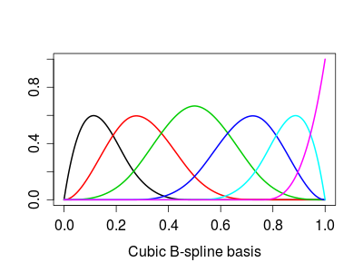
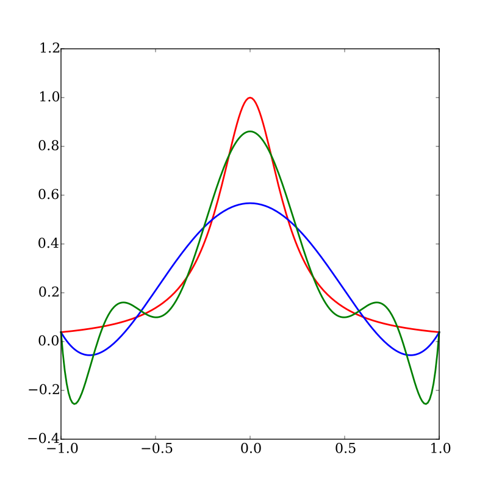

Interpolation
Numerical Methods
2025-04-11
Introduction
Basics
Two continuous sets \(X\in R^p\), \(Y \in R^q\).
Data set: \((x_i, y_i)_{i\in[1,N]} \in X \times Y\)
Take \(\tilde{x} \in X \setminus \{x_i\}_{i\in[1,N]}\). What should be the matching \(\tilde{y}\) ?
Discover implicit relation \(y=f(x)\) (the model) then compute \(\tilde{y}=f(\tilde{x})\).
\(f\) is chosen from a family \(\mathcal{F}\) of functions parameterized by a parameter \(\theta\), the approximation family.
Interpolation vs. Regression
- Interpolation: \(f\) is chosen such that \(\forall n, y_n=f(x_n)\)
- Regression: \(f\) is chosen so as to minimize a fitness criterium such as
- \(\min_f \sum_n \left( y_n-f(x_n) \right)^2\)
- or \(\min_{\theta} \sum_n \left( y_n-f(x_n;\theta) \right)^2 + \lambda || \theta ||^2\) with \(\lambda>0\)
- Remarks:
- some applied mathematicians tend to mix the two (interpolate=evaluate f outside of X)
Examples (1): Linear Interpolation
1d Graph. Join the dots. Linear/Spline
2d Graph: Regression
Conclusion: interpolate only if \(f\) is known precisely on \(X\)
Example (2)

- \(X\) and \(Y\): large databases of low and high resolutions images
- \(\mathcal{F}\): neural network
Why do we need it?
- In economics, we often solve a problem \(\Phi(f)=0\) where \(f\) is a function: \(\forall s, \Phi(f)(s) = 0\)
- If we approximate \(f\) by some element \(f(;\theta)\in\mathcal{F}\) we just need to identify a finite set of parameters \(\theta \in R^n\)
- How do we identify \(\theta\)?
- choose a finite set of \(n\) criteria that must be met
- \(f\) is pin down uniquely
- example: colocation, choose \(s_1, ..., s_n\). Find \(f\) such that \(\forall i=1:n, \Phi(f)(s_i) = 0\)
- choose higher number of objectives (\(p>n\)) that must be minimized:
- example: regression, choose \(s_1, ..., s_p\). Find \(f\) such that minimize \(\sum_i \Phi(f)(s_i)^2 = 0\)
- choose a finite set of \(n\) criteria that must be met
Several interpolation flavours
- local vs spectral:
- local: functions in \(f\) have compact support
- spectral: noncompact support
- linear vs nonlinear:
- \(\mathcal{F}\) is a vector space: \(f(x) \approx \sum_{i=1}^N \theta_n b_n(x)\) where \(b_n\) is a base of \(\mathcal{F}\)
- nonlinear: wavelets, neural networks, ….
Splines
Linear
- Take function \(f\) defined on an interval \([a,b]\). Suppose the value is known at \((a=x_1, ... x_N=b)\). Denote \(y_i = f(x_i)\).
- Join the dots: define a piecewise linear function as \[\forall x \in [x_i, x_{i+1}], \tilde{f}(x) = y_i + \underbrace{\frac{x-x_i}{x_{i+1}-x_i}}_{\text{barycentric coordinate}} (y_{i+1} - y_i)\]
Linear
- Alternate view: \[\tilde{f}(x) = \sum_{i=1}^N y_i B^i_1(x)\] where \(b_1^i(x)=\frac{x-x_{i-1}}{x_i-x_{i-1}}.1_{x\in[x_{i-1},x_i]} + (1-\frac{x-x_{i}}{x_{i+1}-x_{i}}).1_{x\in [x_i, x_{i+1}]}\)
- \((B^i)\) is an interpolation basis
Splines
\(n\)-th order spline : piecewise polynomial function that is \(n\) times differentiable except on a finite set of break points (aka knots), where it is \((n-1)\) times differentiable.
in practice the data points are the breakpoints
example: order 2
- suppose \(\tilde{f}(x_i)\) and \(\tilde{f}^{\prime}(x_i)\) are known, choose the coefficients for the patch \(p_{i+1}(x) = a_{i+1}x^2+b_{i+1}x + c_{i+1}\)
- Already two constraints. Condition \(p_{i+1}(x_{i+1})=\tilde{f}(x_{i+1})\) supplies another one.
- Do it for every patch. Note that it requires to set \(f^{\prime}(a)\) beforehand.
Basis Splines (much better)
- Define \[B_{i,1}(x) = 1_{x \in [x_i, x_{i+1}]}\] \[B_{i,k+1}(x) = \frac{x-x_i}{x_{i+k}-x_i}B_{i,k}(x) + \frac{x_{i+k+1}-x}{x_{i+k+1}-x_{i+1}}B_{i+1,k}(x)\]
- Theorem: Any spline of order \(k\) on the knots \((x_i)\) can be expressed as a linear combination of the basis splines \((B_{i,k})\).
- All basis splines have compact support.
- If grid is regularly spaced there is \(B_k\) such that \(B_{i,k}(x) = B_k(x-x_i)\)
Basis splines
Basis Splines
Basis splines are not interpolating
Unfortunately basis splines are not “interpolating” in the sense that in general \[f(x_i) \neq \sum_{n} f(x_n) B_{n,k} (x_i)\]
One must choose other coefficients \((c_n)\) which satisfy:
\[y_i = \sum_n c_n B_{n,k} (x_i)\]
- there are more coefficients than data points: requires boundary conditions
- f’’=0: natural spline
- going from \(y_n\) to \(c_n\) is called prefiltering
- there are more coefficients than data points: requires boundary conditions
In practice: Interpolations
In practice: Interpolations (2)
Note that in \(y_i = \sum_n c_n B_{n,k} (x_i)\), \(y_i\) and \(c_n\) could perfectly well be vectors. If we use a Vector type which implements all operations (zeros, *, …) we can interpolate them with the same operations
Mental break: matrix conditioning
Matrix conditioning
- Suppose you want to solve vector equation \(A x=y\). Will a small error in \(y\) affect a lot the value of \(x\)? (in particular round-off errors)
- condition number: \(\lim_{\epsilon\rightarrow 0} \sup_{\delta y\leq \epsilon} \frac{\delta x}{\delta y}\)
- or \(\kappa(A) = ||A^{-1}|| || A||\) where \(|| ||\) is a subordonate norm.
- if very-large: the matrix is ill conditioned
- What makes a matrix ill-conditioned?
- some rows/columns are very small, others are gigantic
- rows/columns are almost colinear
Polynomial approximation
Fitting polynomials
Let’s approximate: \(f(;\theta) = \sum_{n=0}^K \theta_k x^k\).
We need \((K+1)\) points to fit a polynomial of order \(K\). Let’s take grid points \((x_0, ... x_{K})\) and denote \(y_k=f(x_k)\)
We need to solve in \((\theta_k)_{k=[0,K]}\):
\[\forall n \in[0,K], \underbrace{\sum_k \theta_k (x_n)^{k}}_{M \theta} = y_k\]
Vandermonde Matrix
- \(M\) has a special structure, a Vandermode matrix: \[ M = \begin{bmatrix} 1 & x_0 & x_0^2 \cdots & x_0^K \\\\ 1 & x_1 & x_1^2 \cdots & x_1^K \\\\ 1 & x_2 & x_2^2 \cdots & x_2^K \\\\ \vdots & \vdots & \ddots & \vdots \\\\ 1 & x_K & x_K^2 \cdots & x_K^K \end{bmatrix} \]
- Vandermonde matrix is ill-conditioned if points are too close or if \(K\) is high.
Orthogonal polynomials
Define a scalar product over functions on the domain \([a,b]\) by choosing a positive weight function \(w(x)\). \[<P,Q> = \int_a^b w(x) P(x)Q(x) dx\]
Construct an orthogonal base \((T_n)_{n=[1,K]}\).
Approximate \[f(x)\approx f(x; \theta) = \sum_{n=0}^K \theta_n T_n(x)=\sum_{n=0}^K <f|T_n> T_n(x)\]
- this is optimal for the norm associated to \(<>\) (projection on the orthogonal base)
Vandermonde matrix
Coefficients can still be identified by inverting: \[\forall n \in[0,K] \underbrace{\sum_k \theta_k T_k(x_n)}_{M \theta} = y_n\]
\[ M = \begin{bmatrix} T_0(x_0) & T_1(x_0) & \cdots & T_K(x_0) \\\\ T_0(x_1) & T_1(x_1) & \cdots & T_K(x_1) \\\\ T_0(x_2) & T_1(x_2) & \cdots & T_K(x_2) \\\\ \vdots & \vdots & \ddots & \vdots \\ T_0(x_K) & T_1(x_K) & \cdots & T_K(x_K) \end{bmatrix} \]
Problem: Runge error
- Red: Runge function \(f(x)=\frac{1}{1+25x^2}\)
- Blue: interpolates at 6, regularly-spaced, points
- Green: interpolates at 10, regularly-spaced, points
- What happens when interpolation order increases?
- oscillations increase.
- Does it contradict Stone-Weierstrass theorem ? No.
- Solutions:
- use regression method instead
- choose the interpolation points wisely

Chebychev Nodes
- There is an optimal way to choose the interpolation points:
- the roots of \(cos(\frac{2 k - 1}{2n} \pi)\) for [-1,1]
- rescale for a finite interval [a,b]
- for the interpolating polynomial: \[|f(x) - P_n(x)| \leq \frac{1}{2^n (n+1)!} \max_{\xi \in [-1,1]} |f^n(\xi)|\]
Chebychev polynomials
- Chebychev polynomials (of the first kind) have their zeros on the nodes.
- Definitions:
- \(T_n(x) = \cos(n \arccos(x))\) (in [0,1])
- recursive: \(T_0(x)=1\), \(T_1(x)=x\), \(T_n(x)=2 x T_{n-1}(x)-T_{n-2}(x)\)
- Very good choice:
- matrix \(M\) is well conditioned: \(\sqrt{2}\)
Chebychev Polynomial
Additional topics
Multidimensional interpolation
- Consider a function \(f\) defined on a space \(X_1 \times X_d\)
- Take \(d\) grids \(\mathcal{G}_1\subset X_1, ..., \mathcal{G}_d\subset X_d\) with linear approximation bases \(\mathcal{B}_1=(b_1^1, ... b_1^{N_1}),..., \mathcal{B}_d=(b_d^1, ... b_d^{N_d})\).
- Then \(f\) can be approximated by \(f(x_1, ... x_d ; \theta) = \sum_{i_1=1}^{N_1} ... \sum_{i_d=1}^{N_d} \theta_{i_1, ... i_d} \underbrace{b_{i_1}^1(x_1) ... b_{i_d}^d(x_d)}_{\text{Product Base}}\)
- Morality:
- linear appoximation along each dimension induces a natural (multi)-linear in many dimensions
- Coefficients are still the solution of a linear system: \[M \theta = y\]
- but \(M\) has a special structure (tensor product)
- Problem: number of coefficients to determine increases exponentially with number of dimensions:
- “Curse of Dimensionality”
Multidimensional interpolation (2)
- Ways to mitigate the curse of dimensionality
- Remedies:
- sparse grids
- adaptive approximation
- neural networks
- …
- No black-magic theorem: there is no solution to the curse of dimensionality
- .. but there are methods to adapt to problem whose intrinsic dimension is smaller than the actual number of variables
In Practice:
Interpolations.jlcan interpolate on multi-dim grids- If you want to construct basis matrices yourself,
BasisMatrices.jl: